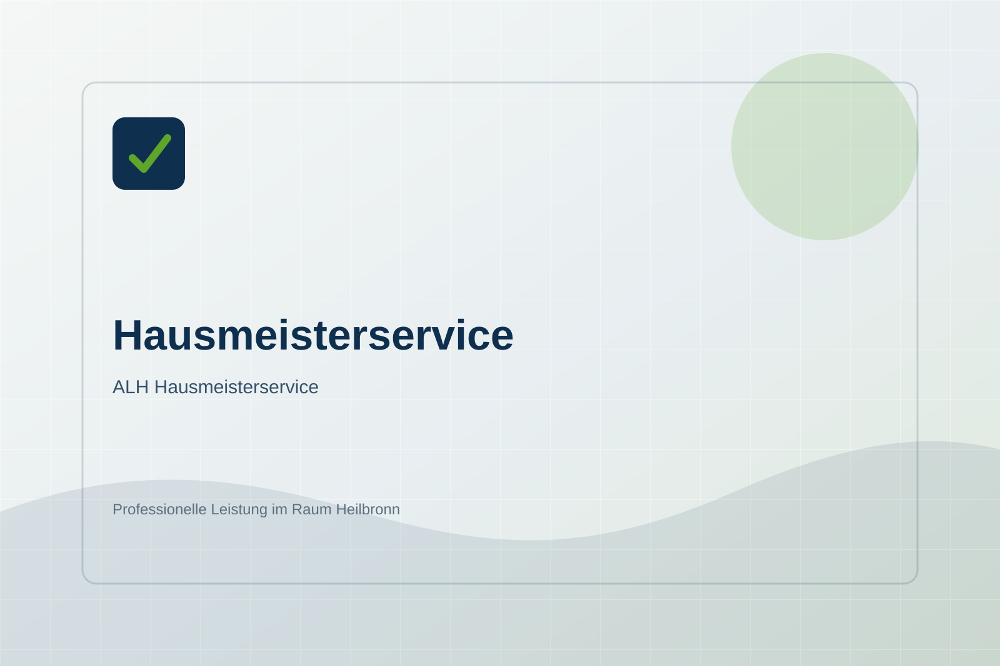

Hausmeisterservice
Zuverlässige Betreuung für Wohn- und Gewerbeobjekte im Raum Heilbronn: regelmäßige Kontrollen, Pflege, Koordination und schnelle Hilfe bei kleinen Anliegen.
Die Ausführung wird auf Objektgröße, Nutzung, Verschmutzung und gewünschte Intervalle abgestimmt. So entsteht ein sauberer, wirtschaftlicher Ablauf für Immobilien in Oedheim, Heilbronn und Umgebung.
Anfrage zu Hausmeisterservice senden